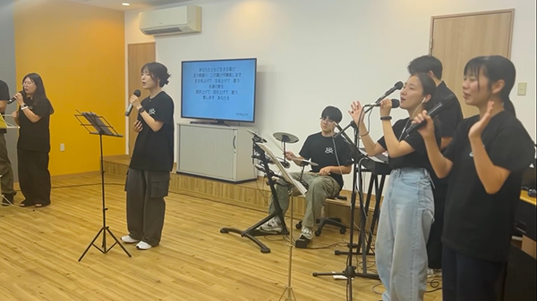

一人ひとりの心に、
イエスさまの愛が届きますように。
最新の賛美
最新の賛美
天であがめられる - 하늘에서 찬란하게 빛나는
ヒトリワーシップの最新の賛美をお楽しみください。
ヒトリワーシップ紹介
ヒトリワーシップは賛美を通じて神様の愛を伝える賛美チームです。
私たちは賛美を通じて人々が神様の臨在を体験し、聖霊様の導きを受けることを願っています。
ミニストリー
礼拝体験の助け
礼拝を通して、一人ひとりが神様の臨在を体験できるように助けること
礼拝の回復運動
日本国内での賛美集会や教会合同礼拝などを通じた、礼拝の回復運動
オリジナル賛美宣教
オリジナル賛美を通して、日本語と韓国語で福音を伝える宣教活動
開かれた礼拝文化
教会の内に留まらず、未信者も招くことのできる「開かれた礼拝文化」の拡大
動画
最新の賛美
ライブ映像
集会情報

2025年8月11日（月）
賛美集会
ノアセンター
2025年8月15日
賛美集会
京都宣教教会
連絡先
〒636-0073 奈良県北葛城郡河合町広瀬台２−１１−７ ヒトリワーシップ
TEL: 0745-60-3504
Email: info@noahibc.org